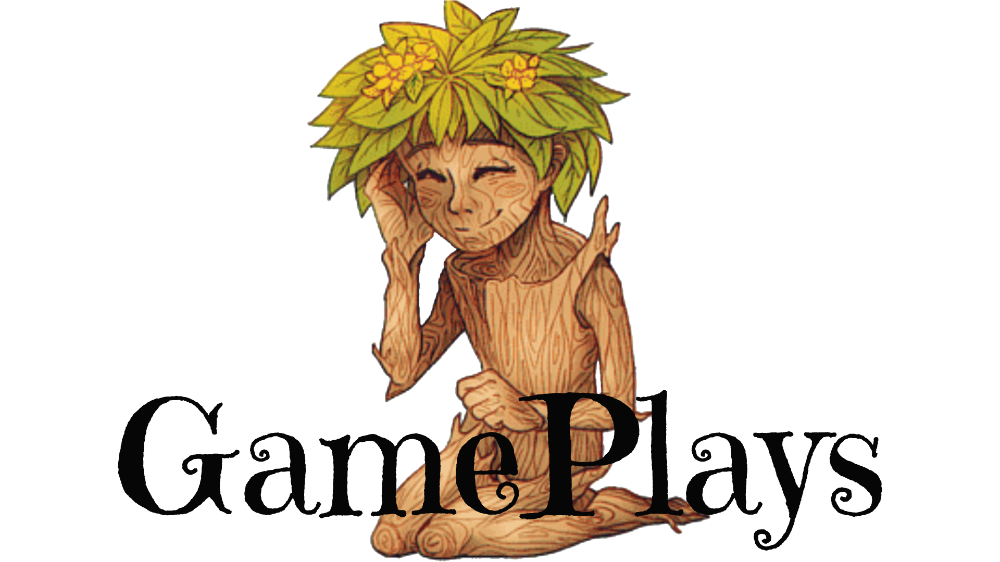
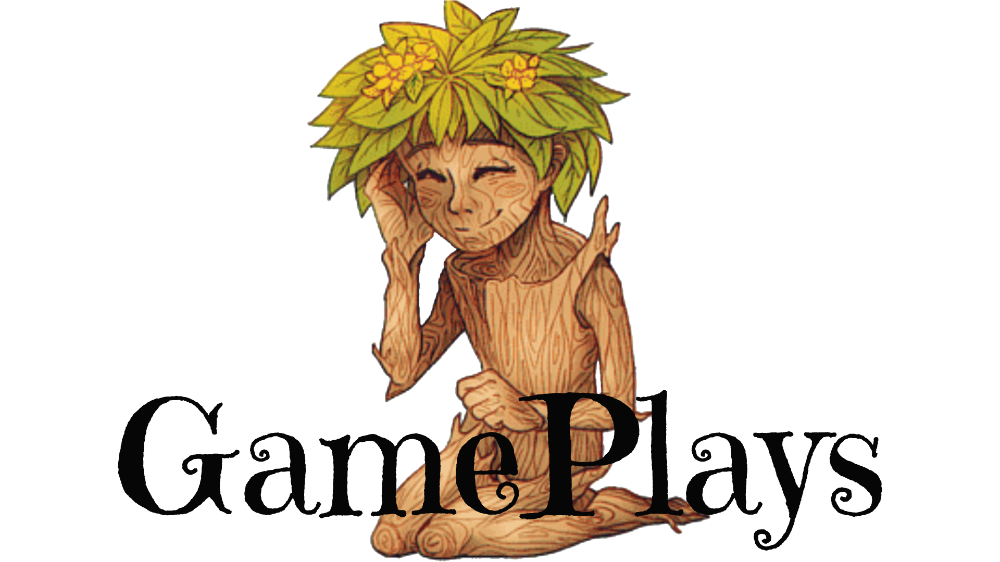
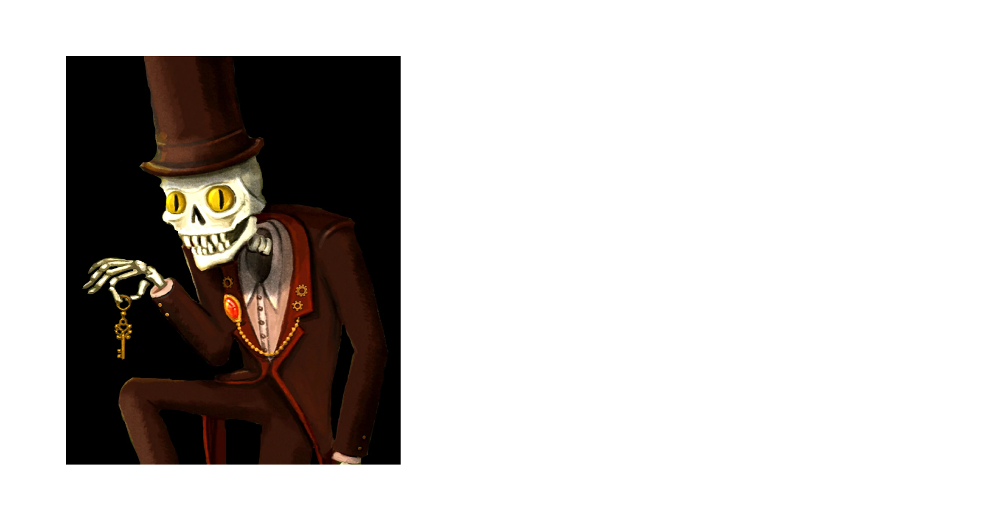
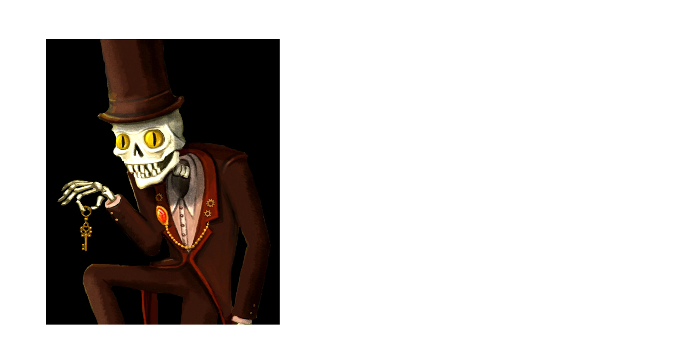
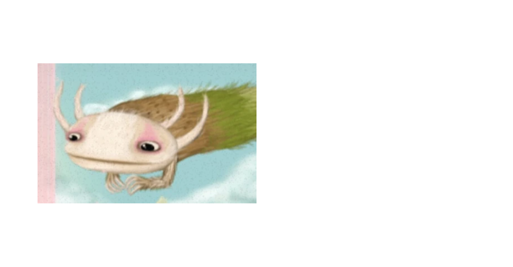
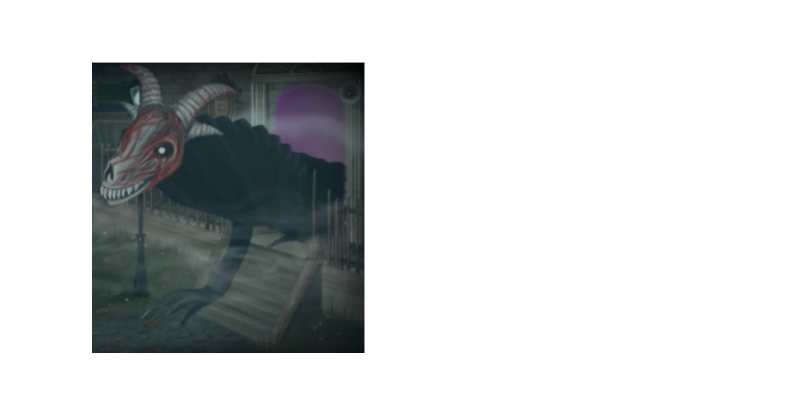
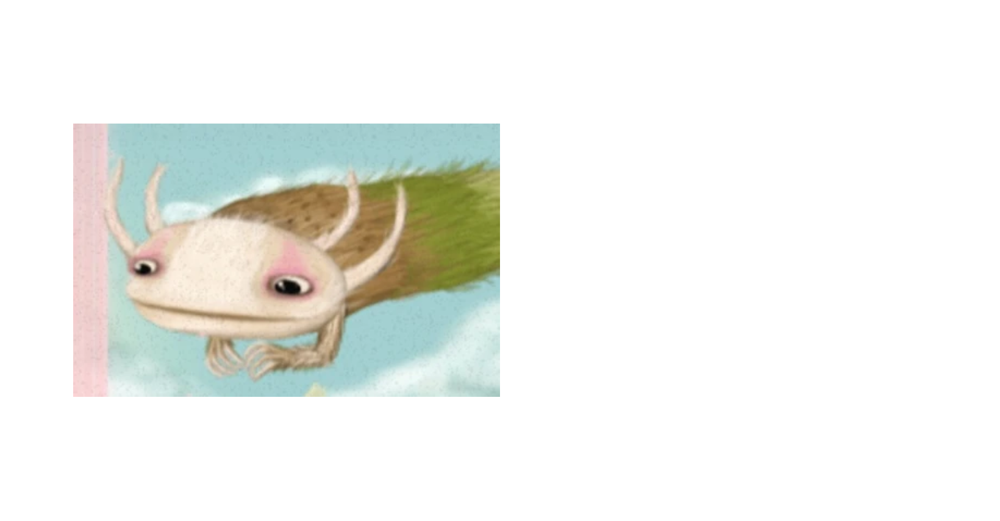
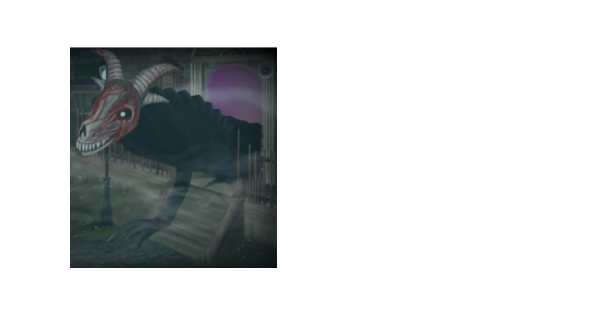
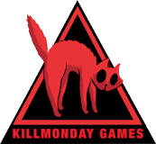

A história de Fran Bow tem início em 1944, ao presenciar o brutal assassinato de seus pais, em sua própria casa. Depois de ser encontrada sozinha, desmaiada num bosque, a garota é levada para um asilo psiquiátrico e separada de seu melhor amigo, um gatinho preto chamado Mr. Midnight. No sanatório, Fran Bow é diagnosticada com esquizofrenia, pois na ocasião da morte de seus pais ela teria tido visões de uma criatura bizarra com chifres em sua janela.
A partir desse momento, o game nos leva diretamente a pensar sobre a condição psicológica de Fran Bow. As coisas que ela afirma ter visto são reais? Será que ela está mesmo sofrendo de um transtorno mental? Existe, então, a possibilidade de explorar e conhecer mais sobre a história de outras crianças internadas na mesma instituição, que afirmam ver monstros parecidos com os do relato da menina.
Algumas delas são diagnosticadas com paranoia e outras sofreram abuso sexual. Paralelamente, um tipo de medicação é ministrado à Fran pelo psiquiatra Marcel Deern, uma estranha pílula vermelha que ao ser ingerida causa alucinações terríveis que envolvem um mundo paralelo em que criaturas medonhas existem em cenários cheios de sangue e mensagens impactantes.
Em meio a todos estes acontecimentos, a missão da jovem é descobrir sobre o que está acontecendo, quem foi o responsável pela trágica morte dos pais e onde está Mr. Midnight, seu companheiro fiel. As inúmeras surreais aventuras que se seguem a partir daí, permeadas pelo horror psicológico, são, ao mesmo tempo, divertidas e sinistras.
Certamente o design contribui para essa sensação, uma vez que a ambientação do game consegue ser extremamente cativante e causar arrepios. O formato, no tradicional aponte-e-clique, envolve quebra cabeças e mini games, com mais de 50 personagens interativos e, ocasionalmente, permite que você jogue com Mr Midnight.
Muitas questões importantes são abordadas no enredo e merecem ser destacadas. Uma delas é o já mencionado suposto adoecimento psicológico de Fran e o tratamento numa instituição opressora que opera uma medicalização excessiva em seus pacientes, silenciando-os. Além disso, quase que diretamente, surge uma problematização relacionada ao abuso sexual infantil e à realização de experimentos cruéis utilizando do saber médico institucionalizado.
É quase impossível falar de Fran Bow sem ainda tratar de seus elementos estéticos, fundamentais para uma interação tão profunda como jogador x jogo. Podemos pensar na estética como ”o instante no qual sujeito e objeto se ligam em uma relação comunicacional’’. Em teoria, a experiência que um jogador vivencia de um jogo é a estética que aquele jogo potencialmente oferece, isto é, as mecânicas e dinâmicas planejadas pelos desenvolvedores, que podem comunicar afetos, sentimentos e sensações.
No caso do game desenvolvido pelos suecos Natalia Figueroa e Isak Martinsson, do estúdio Kill Monday, alguns dos elementos estéticos mais poderosos remetem à própria atmosférica sombria, de horror psicológico. Quase todos os cenários foram planejados para que houvessem versões alternativas, preenchidas por figuras de horror.
Às vezes tais figuras surgem repentinamente, aterrorizando o jogador. Não se pode deixar de mencionar ainda algumas referências que podem ser encontradas: as gêmeas siamesas que parecem ter vindo direto dos corredores d’O Iluminado, o chapeleiro maluco com cara de caveira que parece ter saído do país das maravilhas, dentre outras.
Conjuntamente, a sonoridade do game transmite uma tensão constante, bem como uma sensação interminável de desespero. Os próprios personagens da história, por mais que eventualmente tenham uma aparência medonha, constituem-se como figuras únicas e atrativas, principalmente devido à personalidade bem desenvolvida de cada um, o que fica evidente nos diálogos.


 

 



Fran Bow é um jogo independente de terror psicológico e aventura desenvolvido e publicado pelo estúdio sueco Killmonday Games para o Microsoft Windows, OS X e Linux em agosto de 2015, para Android em fevereiro de 2016 e para o iOS em março de 2016. Foi desenvolvido usando o GameMaker: Studio como motor gráfico, sendo um jogo single player.

Killmonday Games é um estúdio de videogame independente com sede em Estocolmo, Suécia, formado pelo casal Natalia Figueroa (arte e gráficos, designer de jogos, animadora) e Isak Martinsson (programador, designer de jogos, músico).
Fran Bow é um jogo de quebra-cabeça/terror/aventura point-and-click criado e desenvolvido pela Killmonday Games. Foi financiado por crowdfunding através da plataforma Indiegogo, atingindo US$ 28.295 de uma meta de apenas US$ 20.000. Em 27 de agosto de 2015, três anos e meio após o início de seu desenvolvimento, o jogo foi lançado oficialmente para Windows, Mac e Linux no Steam, Gamejolt, Itch.io, IndieDB e Gog, e posteriormente disponibilizado para dispositivos móveis Android e iOS . Fran Bow para dispositivos móveis foi lançado em capítulos separados devido aos limites de armazenamento.
Fran Bow é um jogo de aventura gráfica desenvolvido e produzido pela Killmonday Games, um estúdio de jogos indie sueco, em 2015.
Obtenha o jogo via Steam:
https://store.steampowered.com/app/362680/Fran_Bow/